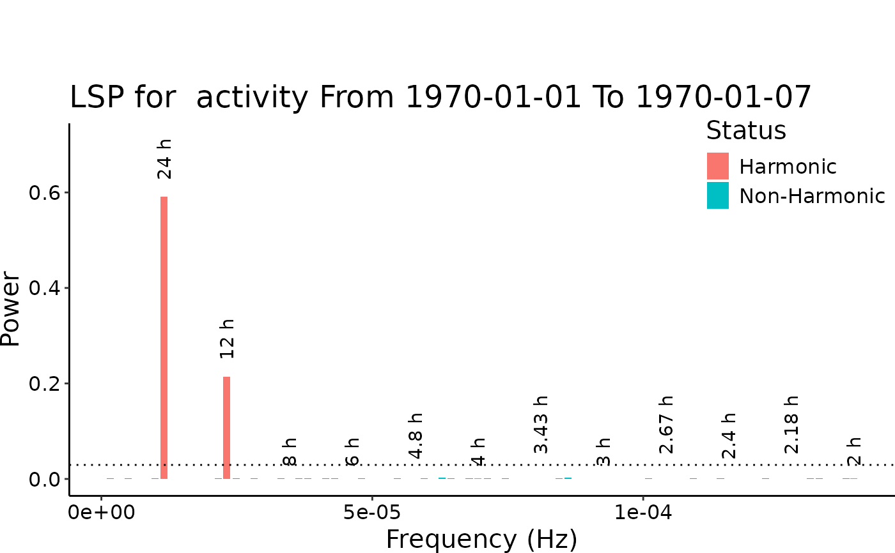
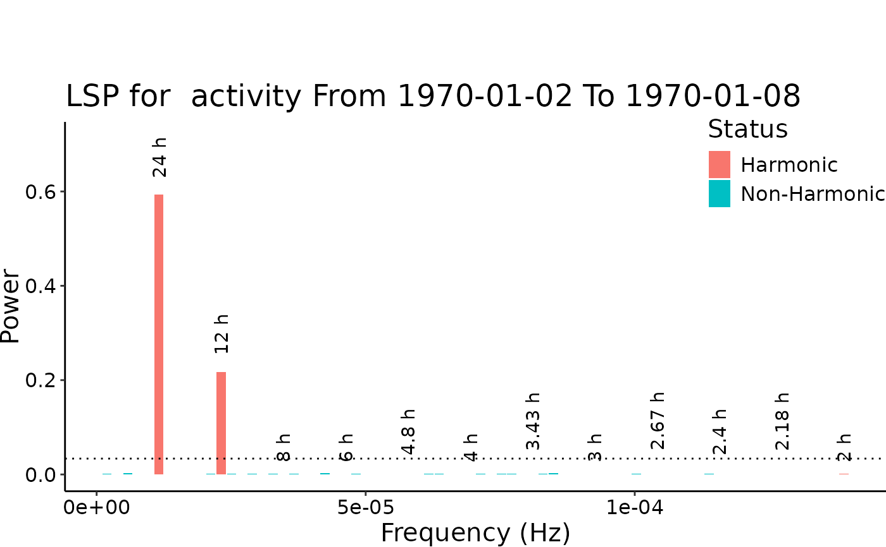
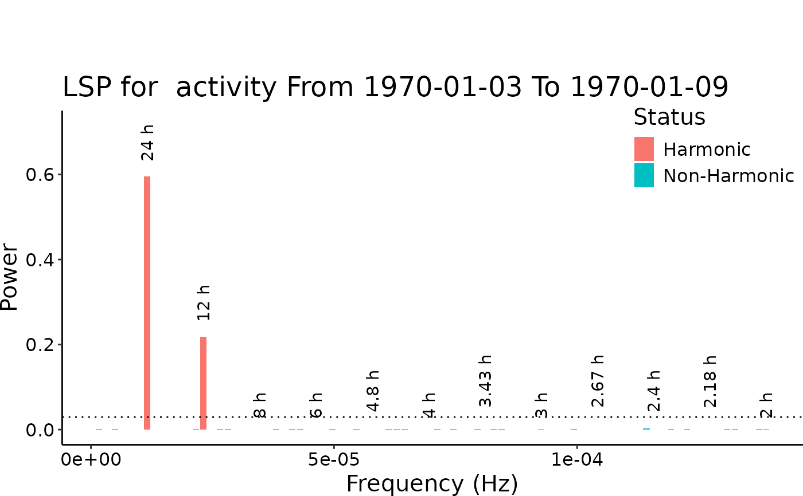
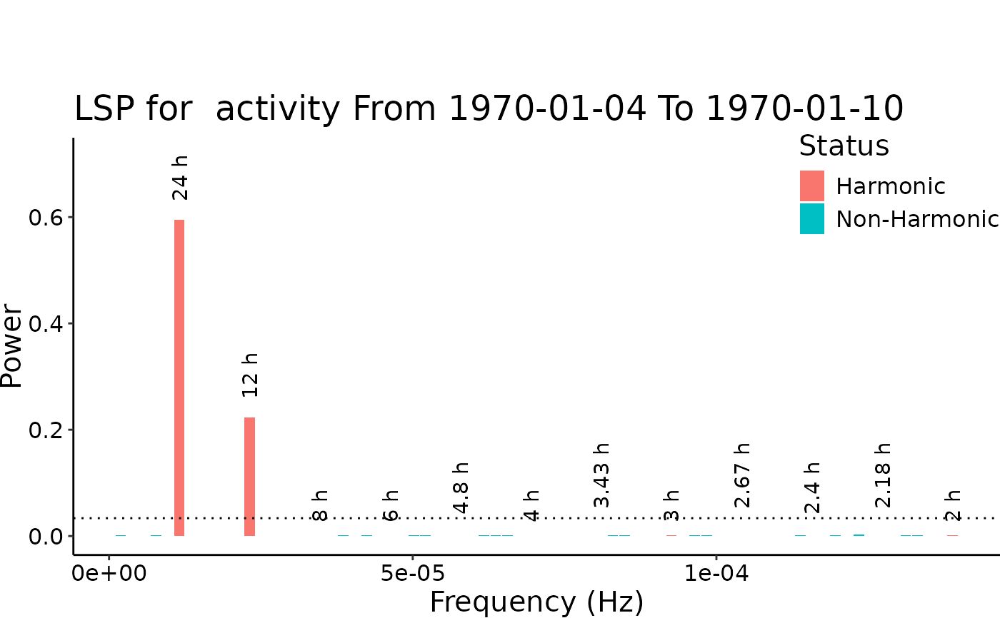
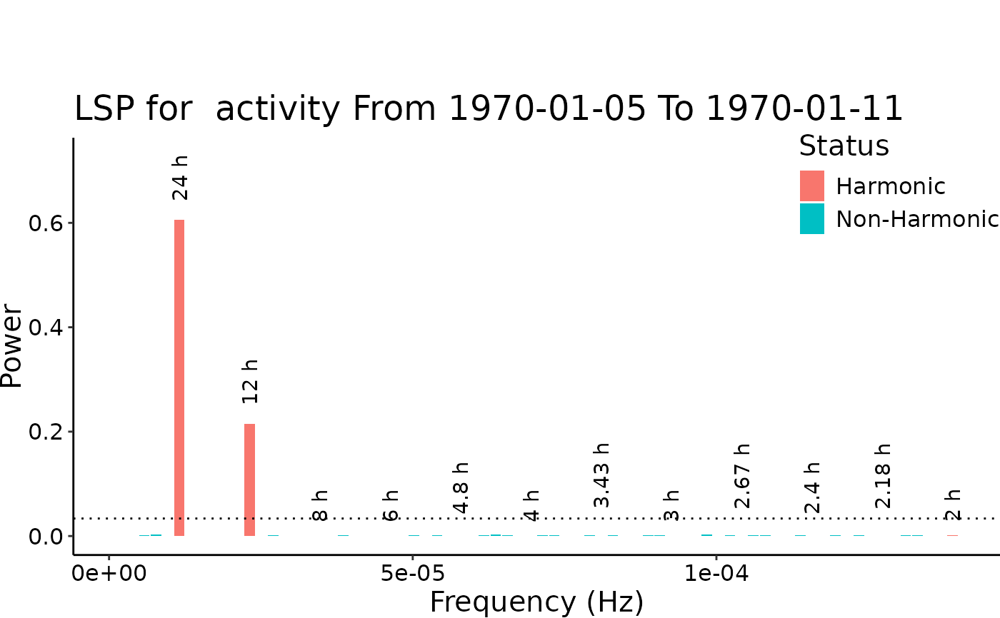
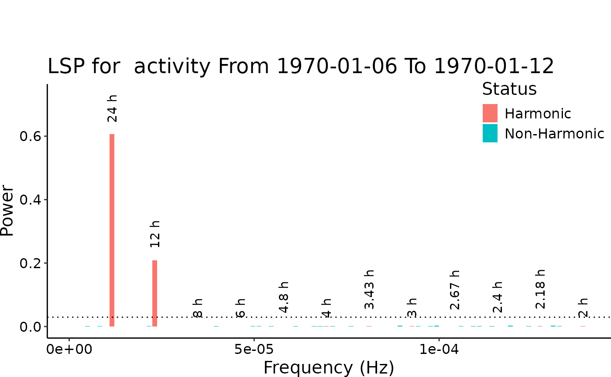
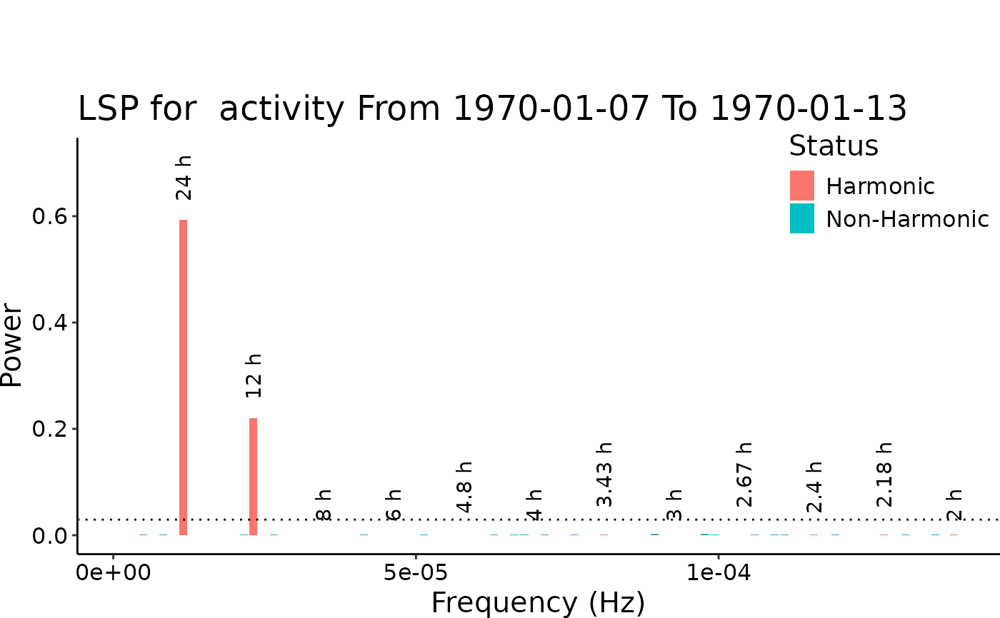
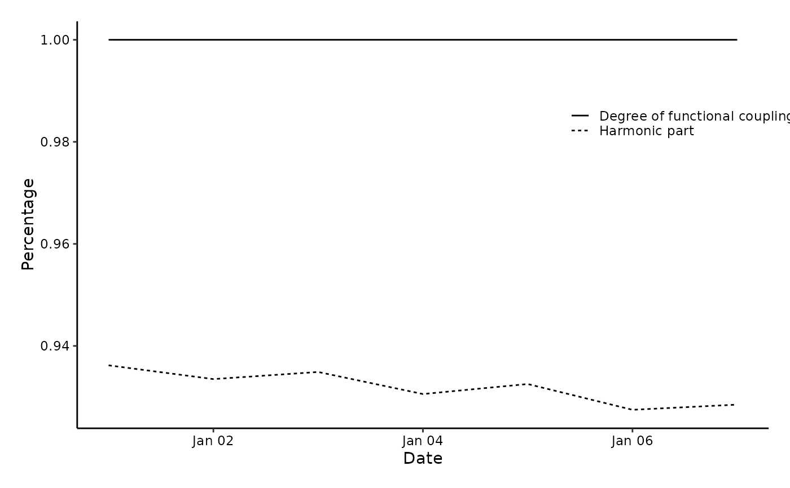

Computes the Degree of Function coupling (DFC), Harmonic Part (HP) and Weekly Lomb-Scargle Spectrum (LSP Spec) for one variable in an activity dataset. The dataset should be digiRhythm friendly.
dfc.RdThe computation of DFC/HP/LSP parameters is done using a rolling window. If the rolling window is 7 days, first, we compute the parameters of Days 1-7 then, of days 2-8 and so on). For each window of the 7 days, the function will compute the LSP spectrum to determine the power of each frequency. Using Baluev (2008), we will compute the significance of the amplitude of each frequency component and determine whether it is significant or not. Then, we will have all the significant frequencies, whose amplitudes' summation will be denominated as SUMSIG. Among all the available frequencies, some are harmonic (those that correspond to waves of period 24h, 12h, 24h/3, 24h/4, ...). As a result, we will have frequency components that are significant and harmonic, whose powers' summation is called SSH (sum significant and harmonic). The summation of all frequency components up to a frequency reflecting a 24h period is called SUMALL. Therefore, DFC and HP are computed as follows:
Usage
dfc(
data,
activity,
sampling = 15,
alpha = 0.05,
harm_cutoff = 12,
rolling_window = 7,
plot = TRUE,
plot_harmonic_part = TRUE,
verbose = TRUE,
plot_lsp = TRUE
)Arguments
- data
The activity data set.
- activity
The name of the activity.
- sampling
The sampling period of the data set in minutes. the Lomb Scargle Periodogram is computed.
- alpha
The significance level that should be used to determine the significant frequency component.
- harm_cutoff
the order of the highest harmonic needed to be considered. An integer equal to 1, 2, 3, ... Default is 12.
- rolling_window
The rolling window used to compute the LSP. Default is 7 days.
- plot
if TRUE, the DFC/HP plot will be shown.
- plot_harmonic_part
if TRUE, it shows the harmonic part in the DFC plot
- verbose
if TRUE, print weekly progress.
- plot_lsp
if TRUE, the LSP of each sliding week will be plotted
Value
A list containing 2 dataframe. DFC dataframe that contain the results of a DFC computation and SPEC Dataframe that contains the result of spectrum computation. The DFC contains 3 columns: ** The date in format YYYY-MM-DD. ** The DFC computed using a @rolling_window days. ** The Harmonic Part (ratio). Data are supposed to sampled with a specific smpling rate. It should be the same sampling rate as in the given argument @sampling Missing days are not permitted. If you have data with half day, it should be removed.
Examples
sampling_period <- 15 * 60 # seconds
two_weeks <- 2 * 7 * 24 * 60 * 60 # seconds
amplitude_24h <- 5
amplitude_12h <- 3
noise_sd <- 2
time_seq <- seq(0, two_weeks, by = sampling_period)
time_posix <- as.POSIXct(time_seq, origin = "1970-01-01")
sine_24h <- amplitude_24h * sin(2 * pi * time_seq / (24 * 60 * 60))
sine_12h <- amplitude_12h * sin(2 * pi * time_seq / (12 * 60 * 60))
noise <- rnorm(length(time_seq), mean = 0, sd = noise_sd)
data <- sine_24h + sine_12h + noise
df <- data.frame(time = time_posix, value = data)
names(df) <- c("datetime", "activity")
print(str(df))
#> 'data.frame': 1345 obs. of 2 variables:
#> $ datetime: POSIXct, format: "1970-01-01 00:00:00" "1970-01-01 00:15:00" ...
#> $ activity: num -2.8 1.23 -3.45 2.11 4.04 ...
#> NULL
my_lsp <- dfc(df, "activity", alpha = 0.05, harm_cutoff = 12, plot = TRUE)
#> [1] "Sampling DFC85 : 15"
#> datetime activity
#> 1 1970-01-01 00:00:00 -2.800087
#> 2 1970-01-01 00:15:00 1.229228
#> 3 1970-01-01 00:30:00 -3.445439
#> 4 1970-01-01 00:45:00 2.112359
#> 5 1970-01-01 01:00:00 4.037201
#> 6 1970-01-01 01:15:00 5.730305
#> [1] 7
#> Processing dates 1970-01-01 until 1970-01-07
#> v Correct time format: First column has a POSIXct Format
#> v Number of days good for DFC: 7 days >= 2 days
#> v Correct numeric format - Column 2 ==> activity
#> The data is digiRhythm friendly

#> from to dfc hp
#> 1 1970-01-01 1970-01-07 1 0.936195986445716
#> Processing dates 1970-01-02 until 1970-01-08
#> v Correct time format: First column has a POSIXct Format
#> v Number of days good for DFC: 7 days >= 2 days
#> v Correct numeric format - Column 2 ==> activity
#> The data is digiRhythm friendly

#> from to dfc hp
#> 2 1970-01-02 1970-01-08 1 0.933500421338975
#> Processing dates 1970-01-03 until 1970-01-09
#> v Correct time format: First column has a POSIXct Format
#> v Number of days good for DFC: 7 days >= 2 days
#> v Correct numeric format - Column 2 ==> activity
#> The data is digiRhythm friendly

#> from to dfc hp
#> 3 1970-01-03 1970-01-09 1 0.934895555566027
#> Processing dates 1970-01-04 until 1970-01-10
#> v Correct time format: First column has a POSIXct Format
#> v Number of days good for DFC: 7 days >= 2 days
#> v Correct numeric format - Column 2 ==> activity
#> The data is digiRhythm friendly

#> from to dfc hp
#> 4 1970-01-04 1970-01-10 1 0.93057178167046
#> Processing dates 1970-01-05 until 1970-01-11
#> v Correct time format: First column has a POSIXct Format
#> v Number of days good for DFC: 7 days >= 2 days
#> v Correct numeric format - Column 2 ==> activity
#> The data is digiRhythm friendly

#> from to dfc hp
#> 5 1970-01-05 1970-01-11 1 0.932534815882435
#> Processing dates 1970-01-06 until 1970-01-12
#> v Correct time format: First column has a POSIXct Format
#> v Number of days good for DFC: 7 days >= 2 days
#> v Correct numeric format - Column 2 ==> activity
#> The data is digiRhythm friendly

#> from to dfc hp
#> 6 1970-01-06 1970-01-12 1 0.927481003071164
#> Processing dates 1970-01-07 until 1970-01-13
#> v Correct time format: First column has a POSIXct Format
#> v Number of days good for DFC: 7 days >= 2 days
#> v Correct numeric format - Column 2 ==> activity
#> The data is digiRhythm friendly

#> from to dfc hp
#> 7 1970-01-07 1970-01-13 1 0.928497156662138
